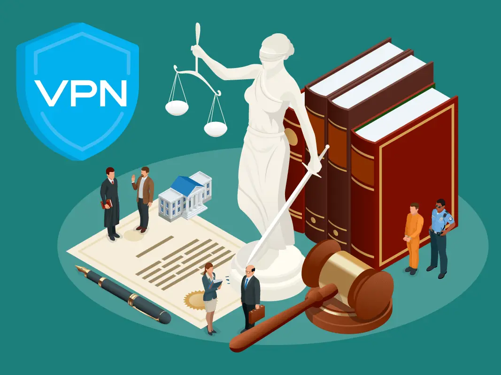

Torrent with a VPN - Guide
Webpages made by LiamBox are for educational purposes only.
You can always send me feedback by clicking this link.
All links open a new tab so you don't have to middle click every link.
Topics
- Introducing Piracy
- Torrenting And Torrent Clients
- Virtual Private Networks (VPN)
- Best Software & Services To Use
- Link Torrent Client With VPN
- Ensure Torrent Client Is Linked With VPN
- Get Started With Piracy
Introducing Piracy
What is Piracy?
In the digital world, it is "the practice of downloading or distributing copyrighted content without permission". Popular type of media including movies, music, software and audiobooks are uploaded and downloaded every day.
Is Piracy Legal?
No. According to the FBI, piracy is "punishable by up to 5 years in federal prison and a fine of $250,000".
Is Piracy Morally Correct?
Depends on the company or group. It is a great punishment to fight against bad business practices that only affect consumers.
For example: Netflix hates password sharing now and they are very "suprised" they are losing subscribers at an alarming rate.
What is Piracy?
In the digital world, it is "the practice of downloading or distributing copyrighted content without permission". Popular type of media including movies, music, software and audiobooks are uploaded and downloaded every day.
Is Piracy Legal?
No. According to the FBI, piracy is "punishable by up to 5 years in federal prison and a fine of $250,000".
Is Piracy Morally Correct?
Depends on the company or group. It is a great punishment to fight against bad business practices that only affect consumers.
For example: Netflix hates password sharing now and they are very "suprised" they are losing subscribers at an alarming rate.
Torrenting And Torrent Clients
What is torrenting?
Torrenting is The act of downloading and sharing the contents of files through the Bitorrent Protocol (or network). It contains the information that is needed for the torrent client to locate and dowloand the files from the users who are sharing them.

What is a torrent client?
A torrent client is software used to dowloand and distribute content by using the bitorrent protocol, the most efficient peer-to-peer (P2P) file sharing protocol. This type of dowloading and sharing files is very effective, as they are shared with other peoples computers and smartphones, and cannot be shutdown by and copyright holders, unless all devices sharing the files are powered off.

qBitorrent is an open source Bitorrent client that is lightweight and simple.
Is Torrenting Legal?
Yes you can use your torrent client to dowloand and share files that are not protected by copyright law or are not illegal or malicious. There are many open source projects that take advantage of this to distribute their software without the need to pay for a server and instead asking the community to share it.
Linux Mint is an open source operating system that is free as in freedom or libre. It can be shared as much as you want.
Is Torrenting Safe?
Downloading and sharing files are safe if you never open them, but you need to be very careful about the files that you open, it's true that "Non-executables cannot contain malware because they are not executables, so opening music and video files are safe.", but this is WRONG! Here's how people are hacked with PDF files.
Because there is malware in PDFs!
A Twitter user called Serpent Explains how a PDF files can be disguised as a malicious file and can lead to a wide range of loses like getting all of your accounts stolen, losing all of your cryptocurrency and NFTs from hot wallets.

Example of a small YouTube channel
The Bread Pirate got hacked because he opened a SCR file (malware) disguised as a PDF file (harmless). (Click the channel name or start at 1:17)
Example of a big YouTube channel
Linus Tech Tips also got hacked because one of their employees opened a PDF that didn't work. (Click the channel name or start at 5:09)
Dangers of cracked software
Unless you know how to use it in secured virtual machines, there is no way to know if it's safe for your computer or smartphone.
Cracked software could have a trojan that stores all malware that is released after opening the installer or executable, heres some examples:
- Ransomware encrypts your files until you pay with your money or forever.
- Crypto Miners making a profit of your electricity, CPU and GPU.
- Becoming part of a Botnet that may be used in DDOS attacks.
- Keyloggers that steal your passwords and private information.

**LAST WARNING: Install cracked software at your own risk and if it's not open source, then it is not safe for your device and data!**
Torrent Terms
- Peerer: Is downloading the file.
- Seeder: Is sharing the file to the peeres.
- Leecher: Is downloading the file but never shares.
- Swarm: Group of people downloading and sharing a file.
- Tracker: Server that tracks connected users in a torrent.
What is torrenting?
Torrenting is The act of downloading and sharing the contents of files through the Bitorrent Protocol (or network). It contains the information that is needed for the torrent client to locate and dowloand the files from the users who are sharing them.
What is a torrent client?
A torrent client is software used to dowloand and distribute content by using the bitorrent protocol, the most efficient peer-to-peer (P2P) file sharing protocol. This type of dowloading and sharing files is very effective, as they are shared with other peoples computers and smartphones, and cannot be shutdown by and copyright holders, unless all devices sharing the files are powered off.
qBitorrent is an open source Bitorrent client that is lightweight and simple.
Is Torrenting Legal?
Yes you can use your torrent client to dowloand and share files that are not protected by copyright law or are not illegal or malicious. There are many open source projects that take advantage of this to distribute their software without the need to pay for a server and instead asking the community to share it.
Linux Mint is an open source operating system that is free as in freedom or libre. It can be shared as much as you want.
Is Torrenting Safe?
Downloading and sharing files are safe if you never open them, but you need to be very careful about the files that you open, it's true that "Non-executables cannot contain malware because they are not executables, so opening music and video files are safe.", but this is WRONG! Here's how people are hacked with PDF files.
Because there is malware in PDFs!
A Twitter user called Serpent Explains how a PDF files can be disguised as a malicious file and can lead to a wide range of loses like getting all of your accounts stolen, losing all of your cryptocurrency and NFTs from hot wallets.
Example of a small YouTube channel
The Bread Pirate got hacked because he opened a SCR file (malware) disguised as a PDF file (harmless). (Click the channel name or start at 1:17)
Example of a big YouTube channel
Linus Tech Tips also got hacked because one of their employees opened a PDF that didn't work. (Click the channel name or start at 5:09)
Dangers of cracked software
Unless you know how to use it in secured virtual machines, there is no way to know if it's safe for your computer or smartphone.
Cracked software could have a trojan that stores all malware that is released after opening the installer or executable, heres some examples:
- Ransomware encrypts your files until you pay with your money or forever.
- Crypto Miners making a profit of your electricity, CPU and GPU.
- Becoming part of a Botnet that may be used in DDOS attacks.
- Keyloggers that steal your passwords and private information.
**LAST WARNING: Install cracked software at your own risk and if it's not open source, then it is not safe for your device and data!**
Torrent Terms
- Peerer: Is downloading the file.
- Seeder: Is sharing the file to the peeres.
- Leecher: Is downloading the file but never shares.
- Swarm: Group of people downloading and sharing a file.
- Tracker: Server that tracks connected users in a torrent.
Virtual Private Network (VPN)
What is a VPN?
short for "Virtual Private Network", is a service and software that hides your IP address and makes you virtually untraceable from your Internet Service Provider (ISP), Goverment and Copyright Trolls. This is because all actions and connections are made in the VPN and are encrypted from your house or Cell Tower, So nobody expect your VPN provider can see what you are doing.

Most VPN providers do not keep logs for the purpose of the service, even if 3rd parties requested customer data, they most likely won't be able to find anything that leads to your IP address of origin.
Are VPNs Legal and Safe?
Yes they are! VPNs have always been used by corporations and businesses for data protection, secure remote access secure communication and etc.
Can I "pirate" or use a free VPN?
Pirating a VPN is iditotic, you can install all VPN software you want but won't have access to the VPN servers, which means you can't connect to a VPN until you pay. Also, using free VPNs is being delusional, as you will still get in trouble with your ISP.
What if I don't use a VPN?
The copyright troll gets your IP address while you were torrenting (Seeding & Peering) and get in contact with your ISP and you receive a DMCA letter telling you to stop torrenting, sometimes it can go as far as getting theatened to pay a "fine" that doesn't exist and a lawsuit against you after paying for the fine or admiting guilt (You should probably never do this)
[For most 1st world countries] According to Reddit user u/simplex0991:
"You'll be fine. The DMCA complaint issuer doesn't know who you are (unless you responded - don't ever respond). Only your ISP has connected the IP to you from their records. ToS differs between providers, but they usually will give you a 3-strikes buffer as they want to keep you as a customer (you give them money after all). Even at that, its uncommon to be fired as a customer so long as you space out your DMCA complaints so you aren't getting 3 in one year."

[For Germans] According to Reddit user u/spyfigure:
"If you are in Germany, nothing of the first paragraph applies. The lawyers have contacted the ISP, who gave them your details. This happens on the first infraction. The letter you get is including a C&D together with the lawyer invoice of €2000, the maximum allowed by law. You can try to ignore it or fight it, but with limited success. If they are thin in resources, it might happen that the statute of limitions' time runs out (2 years). You'll still get threatening letters from the lawyers in the meantime. This is automated, no manpower needed. If they drag you into court, they do it just before the statute of limitations comes into effect. Also, if they want to make an example, they'll do it. If they see that you have shitload of torrents on iknowwhatyoudownload.com, they are probably trying to punish you. Lesson: Never torrent without a properly protected VPN."

"TLDR: Never torrent without a VPN that respects your privacy"
This is not legal advice and a lawyer is highly reccomended!
Best Software To Use
Best Operating System?
GNU/Linux distributions based on Debian (Arch also works)


Alternatives?


If your torrent client dissapears, it most likely got purged by Windows Defender or another antivirus program. You don't need another antivirus, I promise you that.
Best Torrent Client?
All of these use the Bitorrent Network, Guide to link qBitorrent with your VPN.

Alternatives?


Best VPNs?
All of these VPNs state that they do not keep logs, Mullvad VPN is a great example of this.


r/VPNtorrents recomends using these for a reason
Alternatives?


Keep in mind that you should do your research for each VPN and see which one sticks!
Link qBitorrent Client With VPN
- Open qBitorrent
- Go to “tools” on the top left
- Click on “Preferences”
- Click on “Advanced”
- Select “Network Interface”
- Select the name of your VPN (wg-mullvad if you use Mullvad)
- You are done!
Ensure Torrent Client Is Linked With VPN
Get Your Primary Device Ready (Computer)
- In your primary device, turn on your VPN
- Visit ipleak.net
- Scroll down and find "Torrent Address Detection"
- Click “Activate”
- Click “this Magnet Link”
- Choose your Torrent Client
- Click “Open Link”
- Torrent client opens a setup download window. Just click “OK” for now, as you are not dowloading a file that should go inside a “Torrents” or “qBitorrent” folder
- Go back to your browser and wait 10 seconds
- Check your "Torrent Address" is the same as"Your IP Addresses", at least one of those should be the same (IPv4 and/or IPv6)
Get Your Secondary Device Ready (Smartphone)
- Turn on your smartphone or another computer
- Connect your secondary device to your Network by Wi-Fi or Ethernet
- Disable any VPN connections you have on your secondary device
- Visit DuckDuckGo
- type “ip address” in the search bar
- Confirm your device's IP address is different from your computer's IP address
- You are finished! If not, go to step 8
- If this is false or both devices have the same IP address, check your main device's VPN app status.
Getting Started with Piracy
Approved by Redditors - r/Piracy MegaThread
Anything - 1337x
Movies - YTS
More Movies - Rarbg
ROMs for Emulation - Vimms Lair
BIOS files for Emulation - Retroarch System
Japanese Content - The Index
Curated list of piracy links - Awesome Piracy
Websites To Prove You Are Torrenting Safely
IP Leak - Torrent Address Detection
Mullvad - Connection Check